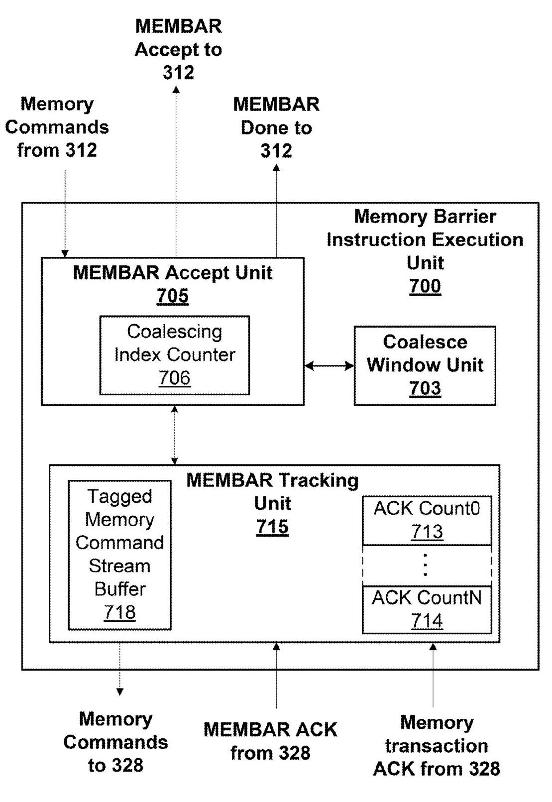
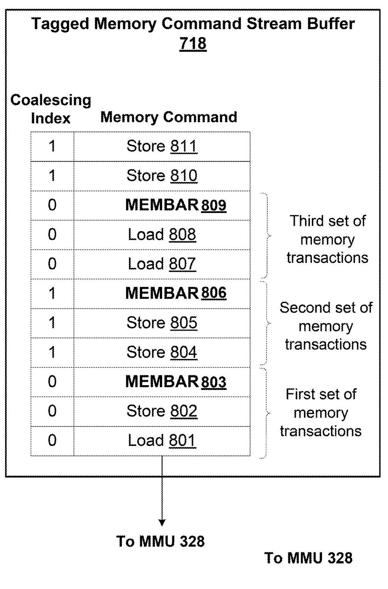
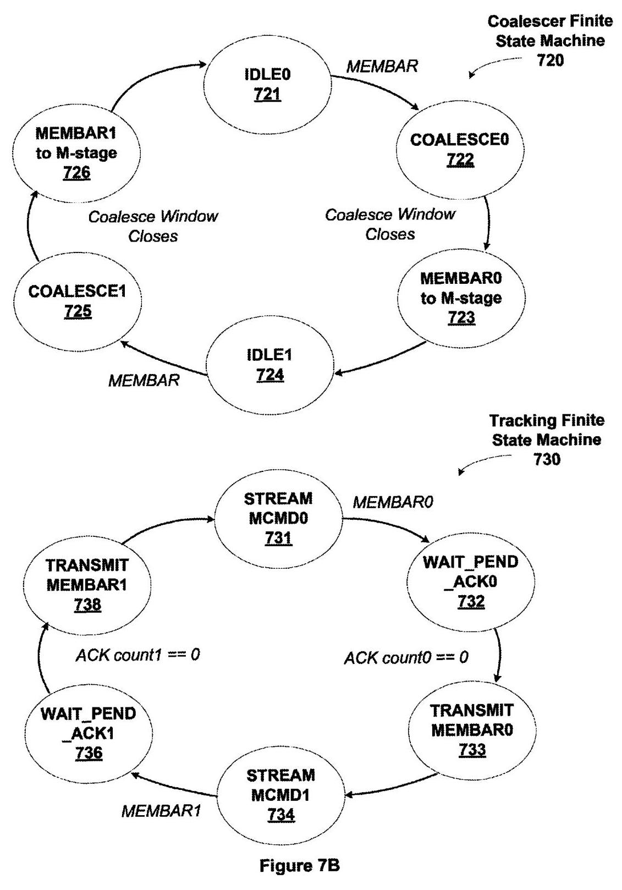
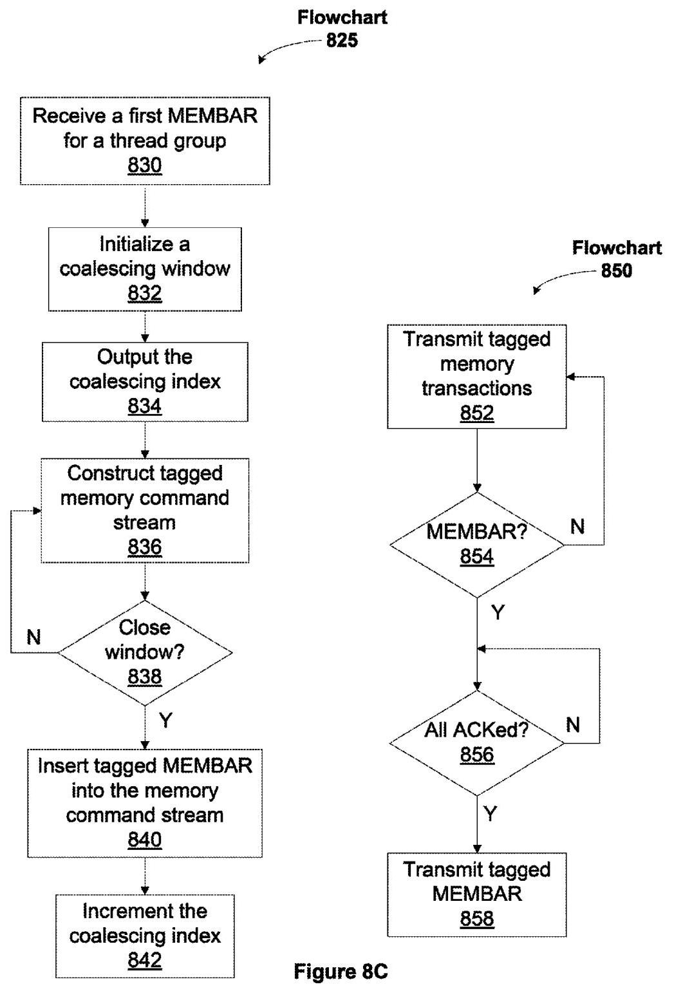

N-WAY MEMORY BARRIER OPERATION COALESCING 深度解读
作者：Shirish Gadre, Charles McCarver, Anjana Rajendran, Omkar Paranjape, Steven James Heinrich
会议/期刊：US Patent US 8,997,103 B2, 2015-03-31, NVIDIA Corporation
一句话总结：这份专利提出用 coalescing index 标记 memory command stream，将多个 thread group 的 MEMBAR 合并成可流水处理的 N-way memory barrier，从而避免单个 coalesced MEMBAR 挂起期间让后续无关 thread group 也被迫停住。
一、问题定义
这份专利解决的是 GPU/SIMT 并行执行中的 memory barrier 吞吐问题。背景是，GPU 中大量 thread、warp 和 CTA 会同时发起 load/store，而 relaxed memory ordering 允许多数 memory transaction 乱序推进；当程序需要跨 thread 或跨地址建立可见性顺序时，就必须执行 MEMBAR。MEMBAR 的语义不是“等一小会儿”，而是要求它之前的 memory transaction 在指定 affinity level 上已经 performed，也就是对相应范围内的其他 thread、processor 或 system client 可见。
专利区分了三类 barrier 范围：MEMBAR.CTA 面向同一 CTA，通常只需要到 L1/CTA 可见性；MEMBAR.GL 面向同一 PPU 内的 global level，通常需要到 L2/global 可见性；MEMBAR.SYS 面向包括 CPU、peer PPU 和系统内存的 system level，代价最高。高层级 barrier 隐含低层级语义，例如 MEMBAR.SYS 也覆盖 MEMBAR.GL 和 MEMBAR.CTA。
原始问题是真实存在的：一个 system/global MEMBAR 往往要走到内存提交点并等待 ACK 返回，专利文本直接说明 round-trip latency 可能达到 hundreds of cycles。对能同时运行成百上千 thread 的 GPU 来说，如果每个 warp 或 CTA 都单独等待这类长延迟 barrier，指令吞吐会被 barrier stall 放大。
本文属于非 First 类型。它不是首次提出 memory barrier，也不是首次提出 coalescing，而是在已有“单个 coalesced MEMBAR”的基础上继续推进。原有方案可以在一个 temporal coalescing window 内收集多个 MEMBAR，然后发出一个合并后的 barrier；但它一次只允许一个 coalesced MEMBAR pending。窗口关闭之后，后续 MEMBAR 和跟随它的指令会被 defer/retry，导致与当前 barrier 无关的 thread group 也更容易被拖住。
动机评估：动机比较 solid。专利虽然没有给出性能实验曲线，但硬件场景本身合理：CTA 可包含 up to 1024 threads，warp 通常 32 threads，系统内可能有大量 in-flight memory transaction，而 system/global MEMBAR 是长延迟操作。缺点是专利没有量化“单 pending coalesced MEMBAR”造成多少吞吐损失，也没有给出不同 N 值的面积、功耗和时序代价。
核心 Insight：关键洞察是把“barrier 顺序”从一个全局阻塞状态转换成“带 tag 的 command stream 顺序”。每个 coalesced MEMBAR 对应一个 coalescing index，同 index 的 memory transaction 必须在该 MEMBAR 之前完成；不同 index 的 transaction 可以继续被接收、排队甚至传输。这样，硬件只需要对每个 index 单独维护 ACK count，并用 MEMBAR done(index) 唤醒对应 thread group，而不是让所有后续工作都等待同一个 pending MEMBAR 完成。
二、相关工作
专利中的相关工作不是论文式综述，而是通过背景和前序机制组织出来的技术脉络。
第一类是传统 memory fence/barrier。它们保证某个 thread 在 barrier 之前的 memory transaction 先于 barrier 之后的 transaction 对外可见，但代价是请求要到达相应 commit point 并返回 ACK。对 CPU 或较小规模并行系统，这种代价可能可接受；对大量 warp/CTA 并发的 GPU，barrier 的长延迟会直接转化成 scheduler 可发射工作减少。
第二类是层级化 memory barrier。专利采用 CTA、GL、SYS 三个 affinity level，让程序只为需要的可见性范围付费。这个思路本身能避免把 CTA 内通信都提升到 system-level fence，但不能解决大量 thread group 在同一层级频繁执行 MEMBAR 时的吞吐问题。
第三类是已有的 temporal coalescing。图 4 到图 6 描述的 execution unit 500 会打开 coalescing window，收集窗口内的 MEMBAR.GL 或 MEMBAR.SYS，等 transition/blocking window 处理完前序 store 与 ACK 后再发出一个 coalesced MEMBAR。它的不足是只支持一个 outstanding coalesced MEMBAR，窗口之后到来的 MEMBAR 会被 defer，后续 global/system memory request 也可能因 blocking window 被限制。
第四类是 MMU 侧的 barrier 简化。专利提到 MMU 可以在没有相关 global/system memory access 时丢弃 MEMBAR，或在只有 global access 时把 MEMBAR.SYS demote 成 MEMBAR.GL。这能减少无效 barrier，但它不能解决多个有效 barrier 之间的流水化问题。
三、技术挑战
挑战 1：不能破坏每个 thread group 的 program order。 当某个 thread group 发出 MEMBAR 后，它后续的 memory transaction 必须被阻塞，直到该 MEMBAR 完成；但其他 thread group 的 transaction 仍可能继续推进。硬件必须精确区分“谁在等 barrier”和“谁只是刚好排在后面”。
挑战 2：coalescing 需要和 memory stream 的真实完成顺序对齐。 合并 barrier 不是简单把多个 MEMBAR 消掉。对于同一个 coalescing index，所有排在该 MEMBAR 前面的 transaction 都要被 MMU ACK 后，MEMBAR 才能发出或释放。
挑战 3：N-way 需要避免 index wrap-around 破坏未完成 barrier。 如果 coalescing index 复用过早，新一轮 transaction 可能和旧一轮 ACK 混在一起。专利用 modulo N index，并要求窗口关闭时等待特定旧 index 的 MEMBAR ACK，避免覆盖仍在使用的状态。
挑战 4：accept path 和 tracking path 必须解耦。 MEMBAR accept unit 要继续接收 scheduler 发来的 memory command，tracking unit 则从 tagged memory command stream buffer 向 MMU 发送 transaction 和 MEMBAR。两者并行工作时，状态机、ACK counter、buffer 顺序必须一致。
挑战 5：硬件复杂度需要局部化。 专利希望“同时处理多个 coalesced MEMBAR”的复杂度主要留在 LSU/L1 侧，而不是让整个 memory subsystem 同时暴露大量复杂 barrier 状态。因此它强调任何时刻 memory subsystem 内可仍只有一个 outstanding MEMBAR，也可在另一实施例中让 MMU 处理多个 tagged MEMBAR。
四、解决方案
整体思路
专利引入 memory barrier instruction execution unit 700，核心组件包括 MEMBAR accept unit 705、coalesce window unit 703、MEMBAR tracking unit 715、tagged memory command stream buffer 718、coalescing index counter 706，以及 N 个 ACK counter。它不再在一个 coalesced MEMBAR pending 时拒绝后续 MEMBAR，而是把 memory transaction 和 coalesced MEMBAR 都写入带 coalescing index 的 stream。scheduler 只阻塞已经发出 MEMBAR 的 thread group，tracking unit 则按 tag 统计已发送 transaction 的 ACK，并在对应 ACK count 为 0 时发出同 tag 的 MEMBAR。

图 7A 是方案的核心硬件图。它把“接收并合并 MEMBAR”的 accept path 和“向 MMU 发送 tagged stream 并等待 ACK”的 tracking path 拆开，中间用 tagged memory command stream buffer 连接。这个结构解释了为什么后续 thread group 的 memory command 可以继续进入系统，而不必等待前一个 coalesced MEMBAR 完成。
贯穿示例
可以把同一个 SPM 中的多个 warp 想成几支排队发货的队伍。Warp A 先做了若干 global store，然后发出 MEMBAR.GL，表示“我的后续操作要等这些 store 对同一 PPU 内其他 thread 可见”。传统做法像是仓库临时封门，等 A 的 barrier 处理完再接更多 barrier。本文做法是给当前批次贴上 index 0：A 的前序 store、在窗口内来自 Warp B/C 的相关 store，以及 A/B/C 的 MEMBAR 都被归为 index 0。scheduler 让 A/B/C 进入 waiting/sleeping，但 Warp D 如果还没有发 MEMBAR，仍可继续发 memory transaction。
当 index 0 的窗口关闭后，新到来的 transaction 使用 index 1。此时 tracking unit 还可以继续把 index 0 的 transaction 送往 MMU，等待 ACK count0 归零后再发 index 0 的 coalesced MEMBAR；accept unit 则已经可以打开 index 1 的 coalescing window，收集下一批 MEMBAR。等 MMU 返回 MEMBAR ACK(index 0)，硬件发 MEMBAR done(index 0)，scheduler 只唤醒等待 index 0 的 thread group。
关键技术点
1. Coalescing index 是 barrier 批次的身份。 触发第一个 MEMBAR 时，accept unit 向 warp scheduler 返回 accept signal，并携带当前 coalescing index。scheduler 保存这个 index，把该 thread group 标记为 waiting/sleeping。窗口内其他 MEMBAR 也被合并到同一个 index。
2. Tagged memory command stream 保留可验证的顺序。 与某个 coalesced MEMBAR 相关的 memory transaction 被打上同一个 index，coalesced MEMBAR 插入到该 index 的最后一个 transaction 后面。这样 tracking unit 不需要猜测哪些 transaction 属于哪个 barrier，只需按 stream 和 tag 维护 ACK count。

图 8A 直观展示了 index 0 和 index 1 在 buffer 中交错出现：第一批 transaction 后跟 MEMBAR，第二批使用另一个 index，第三批又回到 index 0。这个图的价值在于说明 N-way 不是简单并列多个队列，而是在一个 stream 中用 tag 区分 barrier epoch。
3. ACK counter 决定 MEMBAR 何时可发。 每发送一个 tag 为 n 的 memory transaction，ACK count n 增加；收到 MMU 对该 transaction 的 ACK，ACK count n 减少。tracking unit 在 stream 中遇到 tag 为 n 的 MEMBAR 时，只有 ACK count n 为 0 才能把这个 MEMBAR 发给 MMU。
4. Accept 和 tracking 两个状态机并行推进。 accept unit 的状态机在 IDLEn、COALESCEn、MEMBARn-to-M-stage 之间切换，负责打开/关闭窗口和插入 tagged MEMBAR；tracking unit 的状态机在 STREAM MCMDn、WAIT PEND ACKn、TRANSMIT MEMBARn 之间切换，负责发送 transaction、等待 ACK、发送 MEMBAR。

图 7B 把两个状态机摆在一起看：上半部分处理 coalescing window，下半部分处理 stream 到 MMU 的发送和 ACK 等待。对理解本文最关键的流水化很有帮助，因为 N-way 的收益正来自这两个状态机的错位并行。
5. Window close 条件防止 index 复用冲突。 对当前 index n，coalescing window 不只是等 timeout 过期，还要等 (n - (N - 1)) % N 对应的 MEMBAR ACK。N=2 时，相当于使用 index 1 之前要确保 index 0 的旧 barrier 已经安全完成，反之亦然。
6. Scheduler 释放粒度按 index，而不是全局释放。 MEMBAR done signal 携带 coalescing index。scheduler 因此可以只唤醒等待该 index 的 thread group，未受影响的 thread group 不需要被统一阻塞。

图 8C 对应方法流程：左侧 accept unit 接收 MEMBAR、初始化 timeout、构造 tagged stream 并插入 tagged MEMBAR；右侧 tracking unit 发送 tagged transaction、等待同 index ACK count 归零，再发 tagged MEMBAR。它把专利 claim 中的关键步骤压缩成了可执行的硬件流程。
与已有方案的对比
相比 execution unit 500 的单 outstanding coalesced MEMBAR，execution unit 700 的改进点是让后续 barrier 能进入新的 coalescing window，而不是被 defer/retry。它减少的是 barrier pending 阶段对 accept path 的反压，尤其适合多个 thread group 周期性触发 MEMBAR.GL 或 MEMBAR.SYS 的 workload。
不足也很明确。第一，专利没有给出面积、功耗、时序和性能数据，只能从机制上判断收益。第二，N 个 ACK counter、tagged buffer、index wrap 控制和 scheduler index tracking 都增加硬件状态。第三，如果 workload 中 MEMBAR 很少，或 barrier 前后相关 memory transaction 很少，N-way 机制可能主要增加复杂度而收益有限。第四，窗口 timeout 的选择仍是工程调参，过短会降低 coalescing，过长会增加等待。
五、实验评估
实验设定
这是一份美国专利，不是论文，因此没有实验平台、benchmark、baseline 或性能曲线。文中给出的“评估材料”主要是架构约束和流程说明：GPU/SIMT 架构、CTA/warp/thread group 定义、MEMBAR.CTA/GL/SYS 层级、execution unit 500 与 execution unit 700 的状态机，以及 claims 中对方法和系统边界的约束。
可提取的具体数字包括：CTA 可包含 up to 1024 threads，warp 通常为 32 threads；coalescing window 可配置为 0 clocks 到 thousands of clocks；N-way 方案包含 N 个 ACK counter；专利最终有 18 claims 和 15 drawing sheets。这些数字说明目标是高并发 GPU 硬件，而不是小规模 CPU fence 优化。
主要实验与结论
专利没有报告定量实验。其核心结论来自逻辑推导：如果只允许一个 coalesced MEMBAR pending，那么窗口关闭后到来的 MEMBAR 会被 defer/retry，后续 thread group 的可执行 memory command 也更容易受到反压；如果用 coalescing index 和 tagged stream 维护多个 barrier epoch，就可以在 index n 的 MEMBAR 等待 ACK 时，继续接收并 coalesce index n+1 的 memory command 和 MEMBAR。
图 5A/5B/6 支撑“旧方案如何工作”：coalescing、transitioning、blocking 三个窗口能减少窗口内多个 MEMBAR 的重复成本，但 block_wait 阶段会把后续 MEMBAR 标成 pending 并推迟。图 7A/7B/7C/8A/8B/8C 支撑“新方案如何避免这个限制”：accept unit 和 tracking unit 同时运行，buffer 中的 command 用 index 区分，ACK count 归零后才发相应 MEMBAR。
结论支撑性分析
机制层面的支撑是充分的：专利把 scheduler、accept unit、tracking unit、MMU ACK、tagged stream、index wrap 都串起来了，claim 也覆盖了 method、computing system 和 processing subsystem 三种表述。它清楚说明了“哪些 thread group 被阻塞”和“哪些 memory transaction 可以继续执行”。
但性能层面的支撑不足。文中没有给出相对 baseline 的吞吐提升、barrier latency 分布、不同 N 值的收益拐点、buffer 深度需求、ACK counter 位宽、面积/功耗开销，也没有说明在真实 CUDA workload 中 MEMBAR 频率是否足以抵消硬件复杂度。因此这份专利更像架构机制定义，而不是完整性能论证。
六、附加洞察
结论 1：MEMBAR.SYS 和 MEMBAR.GL 可以在 MMU 侧被消除或降级，barrier 不一定都要真实穿透到最重的 commit point。
- 出处：Coalescing Memory Barrier Operations，MMU optimization 段落。
- 推理链条：MMU 做地址转换，因此知道自上次 reset 或上次 barrier 之后是否出现 global/system memory access；如果没有相关 access，barrier 没有实际排序对象，可以直接 ACK；如果 MEMBAR.SYS 期间只出现 global access，则可以 demote 为 MEMBAR.GL。薄弱点是专利没有量化这种优化在 workload 中出现的频率。
结论 2：external MEMBAR 可以和正常 instruction stream 中的 MEMBAR 合并。
- 出处：memory barrier instruction execution unit 500 关于 work distribution unit 200 的 external MEMBAR 描述。
- 推理链条：不同 grid 之间可能有依赖，前一个 grid 完成后仍需确保其 memory operation committed；work distribution unit 可向 L1 发 memory flush bundle 形式的 external MEMBAR；它与 active 且 non-dependent grid 发出的 MEMBAR 使用同一 coalescing 机制，因此图形/compute 调度边界也能复用该硬件。
结论 3：层级化 MEMBAR 的语义是按 thread/client 可见性定义，而不是按 memory space 简单定义。
- 出处：Coalescing Memory Barrier Operations 对 CTA/global/system affinity level 的说明。
- 推理链条：专利先定义 performed 是对其他 processor/thread 可见，再说明 CTA、global、system 三层 affinity；因此 CTA 内 thread 通过 global memory 通信时也可能只需 MEMBAR.CTA，不必因为地址位于 global memory 就使用 MEMBAR.GL。这点对理解 CUDA-style fence 成本很重要。
结论 4：N-way 方案把复杂性限制在 LSU/L1 附近，而不是强迫整个 memory subsystem 同时暴露多个 barrier。
- 出处：N-Way Memory Barrier Operation Coalescing，图 7C 描述前后的文字。
- 推理链条：专利指出任意时刻 memory subsystem 内可以只有一个 outstanding MEMBAR，overlap 的复杂度被 contained to the LSU；另一实施例中才让 MMU 同时处理多个 MEMBAR。这说明发明人意识到全系统多 barrier 会放大验证复杂度，因此提供了较保守的实现路径。
七、总结与评价
这份专利的核心贡献是把 GPU memory barrier coalescing 从“单窗口、单 pending”的串行机制扩展为基于 coalescing index 的 N-way tagged stream 机制。它保留 MEMBAR 的可见性语义，同时让没有触发当前 MEMBAR 的 thread group 继续发射 memory command，并让下一批 MEMBAR 在前一批等待 ACK 时就进入 coalescing。
最大的亮点是抽象很清楚：accept/coalesce 与 track/ACK 分离，coalescing index 作为 barrier epoch，ACK counter 作为可发 MEMBAR 的安全条件。最大的不足是专利没有任何定量评估，无法判断 N=2、N=3 或更高 N 在真实 workload 上的收益，也无法判断 buffer 与状态机开销是否划算。
如果后续做研究或工程复现，最值得补的是三个问题：第一，MEMBAR 密集 workload 中 N-way 对 scheduler stall 的实际降低；第二，不同 coalescing window timeout 和 N 值的敏感性；第三，tagged stream buffer 深度、ACK counter、index wrap 对硬件验证和面积的影响。
八、章节脉络与段落速览
- Front Matter / Abstract：给出专利号、发明人、NVIDIA 受让人、申请/优先权信息、分类号、引用专利和摘要。
- ¶1-3 元数据说明该专利是 US 8,997,103 B2，题为 N-way memory barrier operation coalescing，受让人为 NVIDIA。
-
¶4 摘要概括方案：首个 thread group 的 MEMBAR 会暂停该 group 后续 memory operation，其他 group 的 MEMBAR 可与之合并，未受影响 group 的 memory operation 仍可执行。
-
1 N-WAY MEMORY BARRIER OPERATION COALESCING / Cross-Reference：说明本申请是前序 memory barrier coalescing 申请的 continuation-in-part，并追溯 2009 provisional。
-
¶1 交代相关申请题名、提交日期和序列号，说明本专利是在前序“跨多个 parallel threads 合并 memory barrier”基础上扩展。
-
Background of the Invention：定义技术领域并解释为什么 parallel processor 中 MEMBAR 代价高。
- ¶1 Field 说明领域是 multithreaded program execution，具体是 N-way memory barrier operation coalescing。
- ¶2 解释 memory transaction performed、memory barrier/fence 的基本语义，以及 round-trip 到 system memory commit point 会带来 hundreds of cycles 延迟。
- ¶3 说明 parallel architecture 允许 CTA、processor、system 等不同 cooperation level，因而需要在多个层次排序 memory transaction。
-
¶4 提出需求：需要一种改进技术，在多层次合作的 parallel system 中跨多个 parallel threads 执行 memory barrier。
-
Summary of the Invention：用方法和系统语言概括 N-way coalescing。
- ¶1 说明 scalable multithreaded architecture 下 MEMBAR 很昂贵，因此把来自多个 thread/processing unit 的 request coalesce 以降低系统影响。
- ¶2 从方法角度描述：接收第一个 thread group 的 MEMBAR，阻塞该 group 后续 transaction，构造带 first coalescing index 的 tagged memory command stream，并在前序 transaction committed 后释放 barrier。
- ¶3 从 processing subsystem 角度描述：instruction scheduling unit、MMU 和 memory barrier instruction execution unit 共同实现上述流程。
-
¶4 总结优点：受 coalesced MEMBAR 影响的 thread group 暂停，未受影响的 thread group 仍可执行 memory operation。
-
Brief Description of the Drawings：列出图 1 到图 8C 的作用。
- ¶1 说明附图只是典型实施例，不限制发明范围。
-
¶2-14 依次说明系统框图、PPU、GPC、partition unit、SPM、旧 MEMBAR execution unit、旧 FSM/flow、新 execution unit、新 FSM、新 timing、tagged buffer 和 N-way flow。
-
Detailed Description / System Overview：先建立实现环境，从通用 computer system 到 GPU/PPU。
- ¶1 说明后续描述包含具体细节，但实施并不依赖所有细节。
- ¶2-5 介绍 CPU、system memory、memory bridge、I/O bridge、parallel processing subsystem、display 和外设连接。
-
¶6-12 介绍 PPU、PP memory、host interface、front end、GPC、work distribution unit、memory interface、partition unit、crossbar 和多 PPU 可能性。
-
Processing Cluster Array Overview：介绍 GPC/SPM/SIMT/thread group/CTA 以及 memory hierarchy。
- ¶1-4 说明 GPC 支持大量 thread 并行执行，SIMT 允许 thread 在 common instruction unit 下有 divergent execution path。
- ¶5-7 定义 warp/thread group 和 CTA，说明一个 SPM 可同时支持多个 thread group，CTA size 与 thread group 数和 thread 数有关。
- ¶8-10 说明 SPM 可访问 L1、L2、global memory 和 MMU/TLB，地址映射与 locality 分布影响 memory request。
- ¶11-15 描述 partition unit、L2 cache、FB DRAM interface、ROP，以及架构可替换性。
-
¶16-24 介绍 thread ID、shared memory、local register file、parameter memory、LSU、L1 cache 等与 CTA 内数据共享相关的部件。
-
Coalescing Memory Barrier Operations：解释 relaxed memory ordering、MEMBAR 层级，以及旧的单 pending coalescing 机制。
- ¶1-4 说明 GPU relaxed memory ordering 允许大多数 memory operation 乱序，但 MEMBAR 会在 program order 上建立前后 transaction 的顺序。
- ¶5-8 引用 performed 定义，并把 memory client affinity 划为 CTA、global、system 三层。
- ¶9-14 说明 load/store、dependency order、program order、
MEMBAR.CTA/GL/SYS和层级隐含关系。 - ¶15-20 给出
MEMBAR.lvl语义，强调 GL 比 CTA 更贵，SYS 通常比 GL 更贵。 - ¶21-27 说明 warp/CTA 自然同步可部分 coalesce，L1 cache 通过 configurable temporal window 合并
MEMBAR.GL/SYS，并与 scheduler 交换 accept/retry/done/hint 信号。 - ¶28-41 描述 execution unit 500 的组成、coalescing window、transition window、blocking window、global pending ACK count、MMU ACK 和 external MEMBAR。
- ¶42-50 说明 MMU 可 discard/demote barrier，以及旧 FSM 在 IDLE、COALESCE、TRANSITION、BLOCK、BLOCK_ISSUE、BLOCK_WAIT、ACK 间切换。
-
¶51-58 用图 5B 和图 6 描述旧 coalescing 的时间线和流程，指出单 coalesced MEMBAR 可摊销延迟，但仍会阻塞后续 pending MEMBAR。
-
N-Way Memory Barrier Operation Coalescing：本文核心，提出 tagged stream 与 N-way buffering。
- ¶1-2 点明旧方案限制：只有一个 coalesced MEMBAR pending，窗口关闭后后续 MEMBAR 及其后续指令不被接受。
- ¶3-8 描述 execution unit 700：scheduler 输出 memory command stream，accept unit 接收 MEMBAR 后返回 coalescing index，thread group 被标记为 waiting/sleeping。
- ¶9-12 说明 tagged memory command stream buffer、coalescing timeout、index wrap 条件和 N 个 ACK counter。
- ¶13-23 通过图 7B 解释 accept FSM 与 tracking FSM 在 N=2 时如何从 IDLE0/COALESCE0 切到 IDLE1/COALESCE1，并在 ACK count 为 0 后发 MEMBAR。
- ¶24-31 通过图 7C 描述时间线：index 0 窗口关闭后，index 1 可开始 coalescing，前一 MEMBAR ACK 决定下一窗口关闭。
- ¶32-37 通过图 8A/8B/8C 描述 tagged buffer、scheduler block/release 流程和 accept/tracking 双流程。
- ¶38-40 总结优点：未受当前 coalesced MEMBAR 影响的 thread group 仍可传输 memory operation，至少两个 coalesced MEMBAR 的处理避免 defer/replay/stall。
-
¶41-42 说明实现可作为 computer-readable storage media 上的 program product，并保留实施例修改空间。
-
Claims：用法律权利要求覆盖 method、computing system 和 processing subsystem。
- ¶1 Claim 1 覆盖核心方法：接收第一/第二 thread group MEMBAR，coalesce，tag transaction，生成 tagged stream，发送到 MMU，等待 committed 后释放两个 barrier。
- ¶2-7 Claims 2-7 补充 accept signal 携带 coalescing index、第二批 MEMBAR、提前发送第二 tagged stream、等待 MMU ACK 等限制。
- ¶8-10 Claims 8-10 把同一机制写成 computing system：memory、parallel processing subsystem、instruction scheduling unit、MMU 和 barrier execution unit。
- ¶11-18 Claims 11-18 把同一机制写成 processing subsystem，并覆盖第二 coalescing index、第二 tagged stream、ACK 等实现细节。